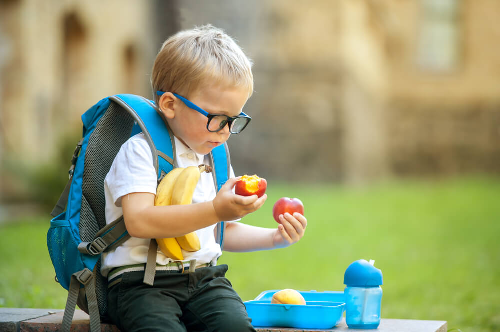
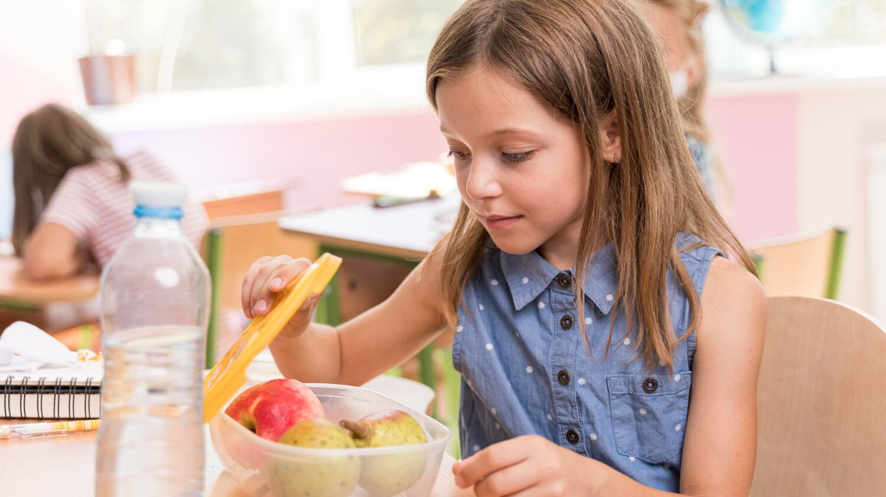

ALIMENTACIÓN SALUDABLE
¿EN QUÉ INFLUYE UNA ALIMENTACIÓN SALUDABLE?
Durante la etapa escolar, alimentarnos de manera variada puede ayudarnos a tener energía, concentrarnos y cuidar nuestro bienestar.

Tener energía
Una alimentación variada nos proporciona nutrientes que nuestro cuerpo necesita para realizar nuestras actividades diarias.
Durante el recreo, elegir alimentos variados puede ayudarnos a mantenernos activos durante la jornada escolar.

Concentración
Lo que comemos también forma parte de nuestros hábitos diarios y puede acompañar nuestro desempeño durante las actividades escolares.
Una alimentación variada y una buena hidratación son importantes durante la jornada escolar.
Crecimiento y desarrollo
Durante la etapa escolar nuestro cuerpo continúa creciendo y desarrollándose.
Por eso es importante mantener una alimentación variada que incluya diferentes grupos de alimentos.
Cuidar nuestra salud
Una alimentación equilibrada forma parte de los hábitos que contribuyen al cuidado de nuestra salud.
También es importante acompañarla con actividad física, descanso adecuado e hidratación.

Buenos hábitos
Las decisiones que tomamos diariamente pueden ayudarnos a construir hábitos saludables.
Aprender a elegir, leer las etiquetas y comparar diferentes opciones también forma parte de este proceso.
“Alimentarnos bien también significa aprender a elegir.”